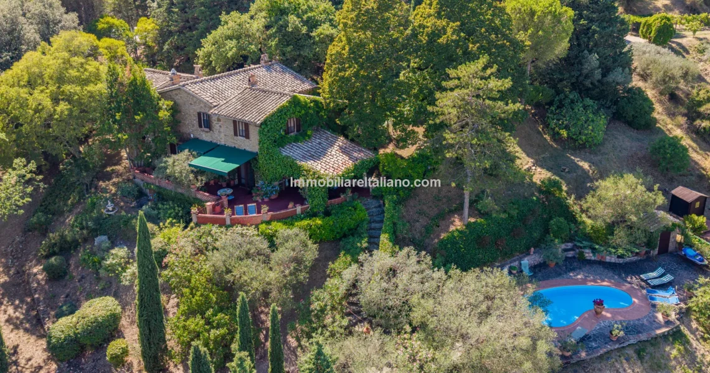

€1.150.000
Magione, Umbria
Open the listingTurnkey Umbrian character: stone/brick, exposed beams and terracotta with a serious private 8×4 pool and productive olive grove on 10.6 ha near Trasimeno - old+new mix under the €1.2M cap.
Opened 18 Sep 2026 on Immobiliare Italiano; asking €1.150.000; 382 m² buildings / currently 2 large bedrooms (reconfigurable to ~4) / 3 baths / 10.6 ha incl. 4.9 ha olives; 8×4 pool body-confirmed. Distinct from board magliano-podere / umbertide keepers.